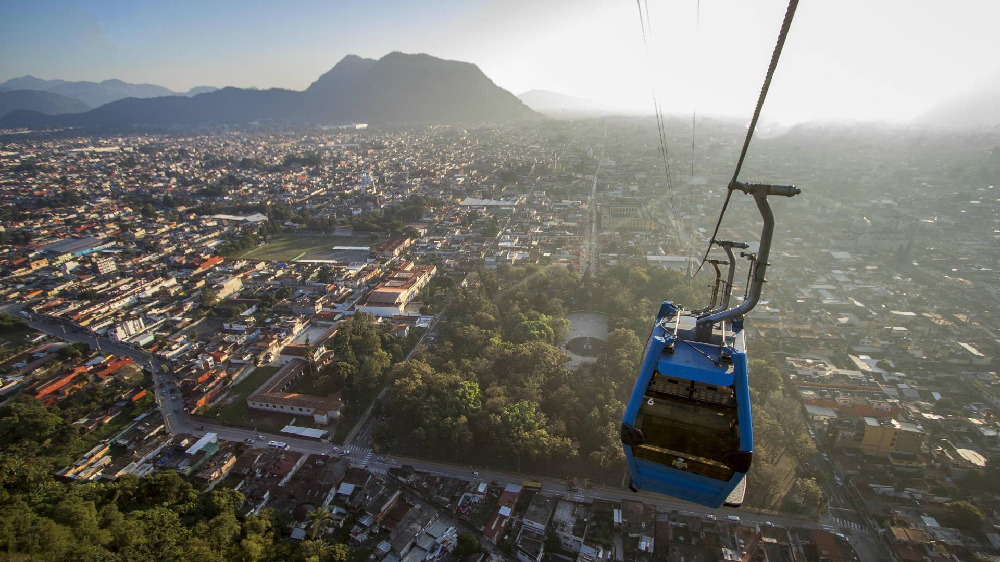
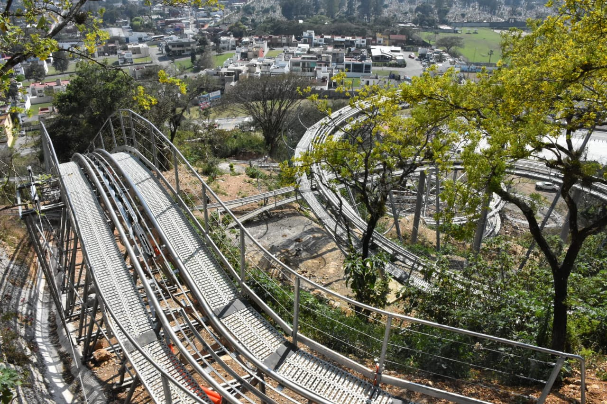
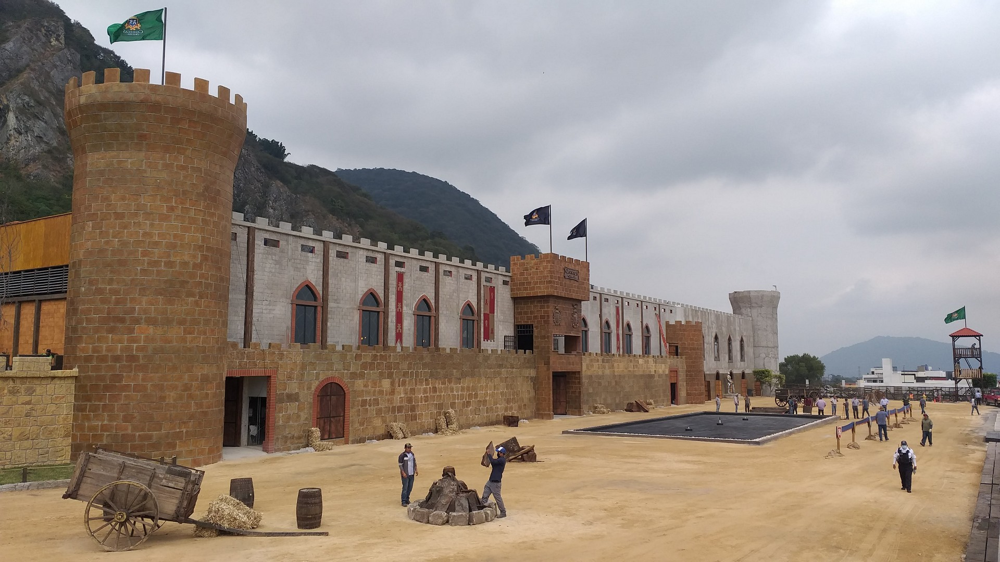

Lugares de Interés
A continuación, te presentamos algunos de los principales atractivos turísticos de Orizaba, con horarios, precios y direcciones para que disfrutes de tu visita:
| Nombre | Horario | Precio | Dirección | Descripción | Imagén |
|---|---|---|---|---|---|
| Teleférico | 9:00 - 18:00 | $100 | Calle del Teleférico, Orizaba | Un increíble lugar y aventura para pasar en familia, claro ¡Si no le tienes medio a las alturas! |  |
| Tobogán de la Montaña | 10:00 - 17:00 | $90 | Ecoparque Cerro de Escamela, Privada de Circunvalación, Colonia Rafael Alvarado, C.P. 94340, en Orizaba, Veracruz. | Un lugarr divertido y también sentirás la adrenalina en tus venas, ¡Atrévete a descubrir este atractivo de pelos! |  |
| Casavegas | 8:00 - 19:00 | $100 | Calle Norte 7, número 320, en el centro histórico de Orizaba, Veracruz. | Un lugar medieval, en donde vas a ver batallas medievales y encuentros de los años de antaño, cuando aún existían los dragones, ¿Te atreves a venir? |  |